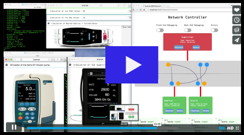

PVSio-web
A formal methods toolkit for model-based development of human-machine interfaces.
PVSio-web is a graphical environment for facilitating the design and evaluation of interactive (human-computer) systems. Using PVSio-web, one can generate and evaluate realistic
interactive prototypes from formal models. PVSio-web has been successfully used for analyzing commercial, safety-critical medical devices. It has been used to create training material for device developers and device users. It has also been used for medical device design, by both formal methods experts and non-technical end users.
Featured videos
Design issues in medical user interfaces.

Paolo Masci, Researcher at INESC TEC / Universidade do Minho, has used PVSio-web to create this video for hospitals, device manufacturers, and regulators, to raise awareness about general user interface software issues.
Integrated Clinical Environment (ICE) Prototype.

Piergiuseppe Mallozzi, PhD student at Chalmers University of Technology, has used created this video to demonstrate how the PVSio-web co-simulation engine
can be used to create a prototype of next-generation interoperable medical devices.
Publications
Tool papers
-
``PVSio-web 2.0: Joining PVS to HCI.''
P. Masci, P. Oladimeji, Y. Zhang, P. Jones, P. Curzon, H. Thimbleby.
Proceedings of 27th International Conference on Computer Aided Verification (CAV2015).
California, USA, 2015.
[PDF]
[BibTeX]
-
``PVSio-web: a tool for rapid prototyping device user interfaces in PVS.''
Patrick Oladimeji, Paolo Masci, Paul Curzon and Harold Thimbleby.
Proceedings of the 5th International Workshop on Formal Methods for Interactive Systems (FMIS 2013).
London, UK, 2013.
[PDF]
[BibTeX]
Applications
-
``Extending a user interface prototyping tool with automatic MISRA-C code generation.''
G. Mauro, H. Thimbleby, A. Domenici, C. Bernardeschi.
3rd Workshop on Formal Integrated Development Environment (F-IDE), satellite workshop of Formal Methods 2016, Electronic Proceedings in Theoretical Computer Science (EPTCS). 2016.
Limassol, Cyprus, 2016.
[PDF]
[BibTeX]
-
``Modeling Communication Network Requirements for an Integrated Clinical Environment in the Prototype Verification System.''
C. Bernardeschi, A. Domenici, P. Masci.
In Proceedings of ICTS4eHealth - 1st IEEE Workshop on ICT solutions for eHealth, pp 135-140, 2016.
Messina, Italy, 2016.
[PDF]
[BibTeX]
-
``Evaluation of formal IDEs for human-machine interface design and analysis: the case of CIRCUS and PVSio-web.''
C. Fayollas, C. Martinie, P. Palanque, P. Masci, M.D. Harrison, J.C. Campos, S.R. Silva
In Proceedings of 3rd Workshop on Integrated Formal Development Environment (F-IDE 2016), co-located with FM2016.
Limassol, Cyprus, 2016.
[PDF]
-
``The benefits of formalising design guidelines: A case study on the predictability of drug infusion pumps.''
P. Masci, R. Rukšėnas, P. Oladimeji, A. Cauchi, A. Gimblett, Y. Li, P. Curzon, H. Thimbleby.
In Innovations in Systems and Software Engineering, Vol 11(2), Springer-Verlag.
London, 2015.
[PDF]
[BibTeX]
-
``PVSio-web: mathematically based tool support for the design of interactive and interoperable medical systems.''
P. Masci, P. Oladimeji, P. Mallozzi, P. Curzon, H. Thimbleby.
In Proceedings of the 5th EAI International Conference on Wireless Mobile Communication and Healthcare, pp 42-45, ICST (Institute for Computer Sciences, Social-Informatics and Telecommunications Engineering)
London, 2015.
[PDF]
[BibTeX]
-
``Formal Verification of Medical Device User Interfaces Using PVS.''
P. Masci, Y. Zhang, P. Jones, P. Curzon, H. Thimbleby.
In ETAPS/FASE2014, 17th International Conference on Fundamental Approaches to Software Engineering, pp 200-2014, Vol 8411, Springer-Verlag.
Grenoble, France, 2014. [PDF]
[BibTeX]
-
``Tool demo: Using PVSio-web to demonstrate software issues in medical user interfaces.'' P. Masci, P. Oladimeji, P. Curzon and H. Thimbleby. In 4th International Symposium on Foundations of Healthcare Information Engineering and Systems (FHIES2014). Washington DC, USA, 2014. [PDF]
-
``Combining PVSio with Stateflow.''
P. Masci, Y. Zhang, P. Jones, P. Oladimeji, E. D'Urso, C. Bernardeschi, P. Curzon and H. Thimbleby.
In 6th NASA Formal Methods Symposium (NFM2014).
Houston, TX, 2014.
[PDF]
[BibTeX]
-
``Model-based development of the Generic PCA infusion pump user interface prototype in PVS.''
P. Masci, A. Ayoub, P. Curzon, I. Lee, O. Sokolsky, H. Thimbleby.
In Safecomp2013, 32nd International Conference on Computer Safety, Reliability and Security.
Toulouse, France 2013.
[PDF]
[BibTeX]
-
``Verification of interactive software for medical devices: PCA infusion pumps and FDA regulation as an example.''
P. Masci, A. Ayoub, P. Curzon, M.D. Harrison, I. Lee, H. Thimbleby.
In Proceedings of 5th ACM SIGCHI Symposium on Engineering Interactive Computing Systems (EICS2013)
London, UK, 2013.
[PDF]
[BibTeX]
-
``On formalising interactive number entry on infusion pumps.''
P. Masci, R. Rukšėnas, P. Oladimeji, A. Cauchi, A. Gimblett, Y. Li, P. Curzon, H. Thimbleby.
In 4th International Workshop on Formal Methods for Interactive Systems (FMIS2011).
Limerick, Ireland, 2011.
[PDF]
[BibTeX]
Thesis
-
``A Graphical Prototyping Tool for Modelling Interactive Systems.''
Nathaniel Watson.
MSc Thesis, University of Waikato, New Zealand, Oct 2016.
-
``Design and development of a MISRA C code generator for safety critical devices.''
Gioacchino Mauro.
MSc Thesis, University of Pisa, Italy, Jul 2016.
-
``Exploring Aspects of Automated Test Generation on Models.''
Nathan Robb.
MSc Thesis, University of Waikato, New Zealand, Oct 2015.
-
``Usability Evaluation on PVSio-Web 2.0.''
Ira Pascoe.
MSc Thesis, University of Waikato, New Zealand, Oct 2015.
-
``Design and development of a co-simulation library for the PVSio-web prototyping tool.''
Piergiuseppe Mallozzi.
MSc Thesis, University of Pisa, Italy, Sep 2015.
-
``Emulink: a graphical modelling environment for PVS.''
Enrico D'Urso.
MSc Thesis, University of Pisa, Italy, May 2014.